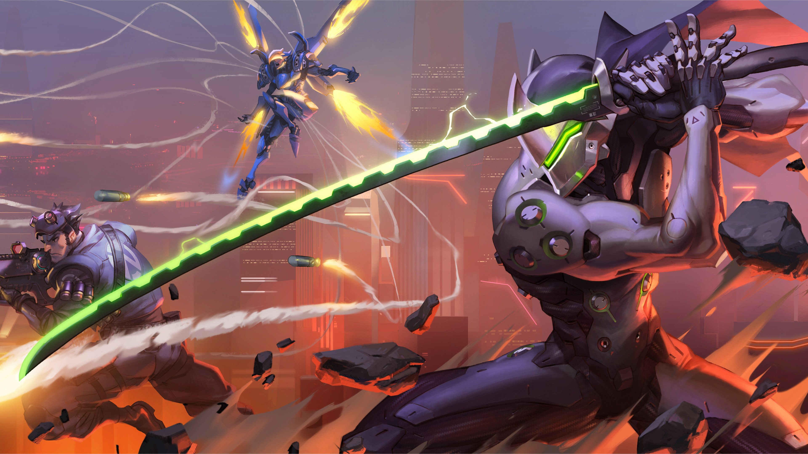
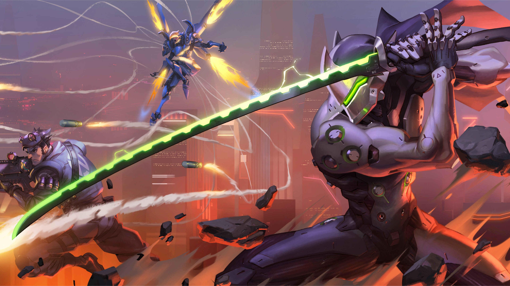

Đánh giá Grand Theft Auto 5 (GTA 5): Đắm mình trong thế giới “mafia” của riêng bạn
1. GTA 5: Tựa game đẳng cấp thế giới
Grand Theft Auto 5 là một tựa game với cốt truyện thông minh, độc ác và bình luận có liên quan chặt chẽ về nước Mỹ đương thời, hậu khủng hoảng kinh tế. Mọi thứ về nó đều mang tính châm biếm: nó xé toạc thế hệ Millennial, những người nổi tiếng, cực hữu, cực trái, tầng lớp trung lưu, giới truyền thông… Không gì an toàn trước miệng lưỡi sắc bén của Rockstar, kể cả những trò chơi điện tử hiện đại… Trò chơi được phát hành vào tháng 9 năm 2013 trên PlayStation 3 và Xbox 360, tháng 11 năm 2014 trên PlayStation 4 và Xbox One, và vào tháng 4 năm 2015 trên nền tảng game PC Microsoft Windows. Các phiên bản dành cho game console PlayStation 5 và Xbox Series X dự kiến sẽ được phát hành vào cuối năm 2021.
2. Đặc trưng của GTA 5
Khái niệm thế giới mở trong GTA 5 thực sự là một lợi thế khác biệt của series Grand Theft Auto. Rockstar đã thành công trong việc khai thác tối đa mọi tiềm năng của một trò chơi thế giới mở. Đó là lý do tại sao tôi đánh giá GTA 5 sẽ khiến bạn say mê khi khám phá nó.
Người chơi có thể làm bất cứ điều gì họ muốn, và không chỉ tạo ra sự hỗn loạn trên đường cao tốc hoặc bắt người chơi đối phó với cảnh sát. Người chơi còn có thể ghé thăm các câu lạc bộ đêm, đi tàu, bơi dưới đáy biển hoặc bắt máy bay. Hơn nữa, người chơi còn được đưa ra những cách để kiếm tiền thay vì đi cướp, đó là sở hữu cổ phiếu trên sàn chứng khoán.
-dam-minh-trong-the-gioi-mafia-cua-rieng-ban/anh1.webp)
Việc khắc họa tính cách của từng nhân vật chính trong GTA 5 là rất phù hợp. Bên cạnh những câu chuyện của riêng họ, tính cách và phong cách nói chuyện của từng người trông rất khác biệt và đặc biệt. Ví dụ, Franklin với phong cách ăn nói không thể tách rời việc sử dụng các từ homie và nigga…
-dam-minh-trong-the-gioi-mafia-cua-rieng-ban/anh2.webp)
3. Cốt truyện
Không giống như phần trước chỉ có một nhân vật chính, GTA 5 có thêm một điều bất ngờ, ba nhân vật chính với ba bối cảnh câu chuyện khác nhau. Chào mừng bạn đến với Los Santos, ngôi nhà và chiến trường của:
- Michael De Santa: Tên cướp ngân hàng đã giải nghệ
- Trevor Philips: Tên bán thuốc phiện và buôn lậu vũ khí
- Franklin Clinton: Tên giang hồ đường phố
Vụ cướp kéo dài 9 năm của Michael và Trevor tại North Yankton cùng với hai thành viên phi hành đoàn khác đã kết thúc trong thảm họa. Bị phục kích bởi lực lượng cảnh sát, Michael đã bị thương phải nhờ Trevor cứu và cuối cùng biến mất một cách bí ẩn. Chín năm sau, hai “đôi uyên ương” này đi đến cùng một kết luận – rằng mỗi người bạn của họ đều đã chết trong thảm kịch.
-dam-minh-trong-the-gioi-mafia-cua-rieng-ban/anh3.webp)
Tuy nhiên, ai có thể ngờ rằng Michael đã tự cứu mình, làm nhân chứng cho FBI và trở nên giàu có. Trong khi đó, ở một góc khác của thành phố, Trevor, người không biết về số phận của Michael, phải chiến đấu và bắt đầu công việc kinh doanh ma tuý của mình từ đầu. Giữa hai nhân vật này có Franklin Clinton, một tay xã hội đen trẻ tuổi vừa chuẩn bị bắt đầu cuộc đời phạm tội của mình. Franklin cuối cùng đã gặp Michael, đối tác tội phạm mà anh ta tìm kiếm. Cuộc gặp gỡ đáng nhớ đầu tiên giữa hai nhân vật kết thúc bằng việc xây dựng một mối quan hệ hợp tác đặc biệt, bắt đầu cho nhiều hoạt động tội phạm hơn. Michael và Franklin cuối cùng quyết định cướp một cửa hàng trang sức để củng cố tài chính.
-dam-minh-trong-the-gioi-mafia-cua-rieng-ban/anh4.jpg)
Vụ cướp đưa Michael trở lại thế giới tội phạm, Franklin ở một cấp độ cao hơn, và Trevor phát hiện ra rằng người bạn thân nhất của mình vẫn chưa chết. Trevor rất ngạc nhiên trước sự thật này, sau đó anh ta chạy trốn đến Los Santos, cố gắng tìm Michael và yêu cầu một lời giải thích. Nỗ lực cuối cùng cũng thành công nhờ sự giúp đỡ của Dave. Thay vì tức giận với những lời nói dối của Michael, Trevor quay trở lại liên minh để thành lập nhóm tội phạm đã chia rẽ trong quá khứ nhưng với sự giúp đỡ của Franklin và Lester, nó đã xảy ra một vấn đề phức tạp. Đụng độ biết bao thế lực tội phạm khác, thậm chí cả chính quyền, bộ ba này phải đối mặt với những lời đe dọa sẵn sàng đòi mạng bất cứ lúc nào. Vậy liệu Trevor, Michael và Franklin có thành công trong việc thực hiện tội ác lớn nhất của họ? Có những trở ngại nào để ngăn cản họ? Sẽ có những loại xung đột nào? Bạn có thể tìm thấy tất cả câu trả lời cho những câu hỏi này bằng cách chơi GTA 5.
4. Gameplay
Game thủ không bị ép buộc phải theo dõi câu chuyện với một nhịp độ nhất định. Có thể khám phá thế giới mở và làm bất cứ điều gì bạn muốn là yếu tố chính của GTA 5. Cho dù bạn muốn cướp một chiếc xe bọc thép, cướp một cửa hàng tiện lợi, đốn hạ người đi bộ hay chỉ đơn giản là lái xe xung quanh, bạn đều có thể làm được.
Tất cả điều này có thể được thực hiện từ góc nhìn thứ ba với tùy chọn cho người dùng PC sử dụng chuột, bàn phím hoặc bộ điều khiển. Do đó, chủ sở hữu phiên bản PC có thể hoán đổi giữa các sơ đồ điều khiển khác nhau cho các khía cạnh khác nhau của trò chơi. Ví dụ: bạn có thể sử dụng chuột và bàn phím khi đang đọ súng với cảnh sát và sau đó chuyển sang bộ điều khiển để thoát khỏi tình huống đó trong ô tô, máy bay, thuyền hoặc tàu lặn.
Như mọi khi, tiền là mục tiêu chính của trò chơi. Nó là thứ thúc đẩy cả ba nhân vật chính và đẩy bạn vào con đường thực hiện các hành vi tội ác. Sau khi có tiền, bạn có thể đầu tư mua lại một số doanh nghiệp, nó sẽ tự động tạo ra tiền cho bạn, cá nhân bạn cũng có thể tham gia để tạo thêm một số doanh thu cho nhân vật của mình. Ngoài ra còn có tùy chọn đầu tư vào thị trường chứng khoán, giống như trong cuộc sống thực, nó thực sự khó khăn. Trừ khi bạn trực tiếp gây ảnh hưởng đến thị trường, chẳng hạn như đầu tư vào công ty xe hơi cụ thể và sau đó thực hiện một số hành động sẽ nâng cao giá trị cổ phiếu của công ty đó.
-dam-minh-trong-the-gioi-mafia-cua-rieng-ban/anh5.webp)
Đôi khi mục tiêu chính không phải là tiền, chỉ cần lái xe vòng quanh Los Santos cũng là một trải nghiệm thú vị. Các loại xe và mẫu xe khác nhau, các tùy biến về tốc độ, hiệu suất và lực kéo đã được nhà phát hành tối ưu hóa rất tốt để game thủ cảm nhận được tính chân thật khi ngồi trên những con xe và lướt vòng quanh Los Santos.
-dam-minh-trong-the-gioi-mafia-cua-rieng-ban/anh6.webp)
Cơ chế bắn súng trong GTA V là một khía cạnh khác của trò chơi được duy trì tốt và được cải thiện đáng kể bằng cách cung cấp cho người chơi tùy chọn chuyển sang chế độ góc nhìn thứ nhất. Đối với những người thích góc nhìn thứ nhất cho bất kỳ loại game bắn súng nào, đây là một bổ sung đáng hoan nghênh và chúng tôi hy vọng Rockstar sẽ tiếp tục triển khai trong các phần sau.
5. Tạm kết về GTA 5: Tựa game đẳng cấp thế giới
Năm 2015, tờ báo ca ngợi GTA 5 là trò chơi điện tử xuất sắc thứ hai trong lịch sử. Trò chơi cũng xếp hạng cao trên một số danh sách do công chúng bình chọn: bao gồm vị trí thứ 8 trong danh sách “100 trò chơi điện tử xuất sắc nhất mọi thời đại” của độc giả tạp chí Empire và thứ 5 trong danh sách “Top 100 trò chơi điện tử” của khán giả chương trình Good Game.
-dam-minh-trong-the-gioi-mafia-cua-rieng-ban/anh7.webp)
Anh em nghĩ gì về tựa game GTA 5? Hãy comment chia sẻ ý kiến của anh em bên dưới, hy vọng những anh em game thủ trên cả nước nhất là ở Thành phố Hồ Chí Minh, nơi đại dịch Covid 19 bùng phát nghiêm trọng sẽ có thật nhiều sức khỏe. Và cuối cùng đừng quên điều quan trọng nhất, hãy theo dõi Gaming Reviewer để cập nhật những bài viết mới nhất về game ps4 nha anh em.
-dam-minh-trong-the-gioi-mafia-cua-rieng-ban/bai viet lien quan 1.jpg)
-dam-minh-trong-the-gioi-mafia-cua-rieng-ban/bai viet lien quan 2.jpg)
-dam-minh-trong-the-gioi-mafia-cua-rieng-ban/bai viet lien quan 3.jpg)